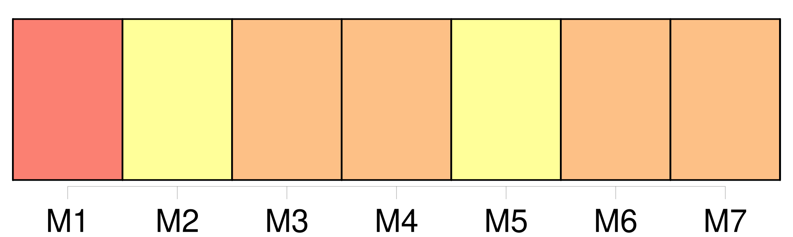

Longueur nb maillons : 9 mentions |
 |
Un artiste bisontin fana d'aviation a travaillé bénévolement à l'édification d' [une sculpture métallique] pour rendre hommage au pilote d'hélicoptère qui a trouvé la mort le 22 octobre 2001 à Soulce-Cernay. [3 phrases] [Le mémorial] conçu par André Pargenin sera inauguré ce mardi 22 octobre, jour anniversaire de la disparition de Dominique. Le maire de Soulce-Cernay [l'] a trouvé superbe et l'artiste bisontin n'a pas eu de mal à le convaincre de [l'] installer sur le lieu même du drame : « [La sculpture] , [qui] représente un hélicoptère, mesure 1, 25 m de haut et sera scellée sur un socle de un mètre. Je [l'] ai réalisée en inox avec un vernis passé au four afin de lutter contre les pollutions extérieures... [1 phrases] Les croyants [y] verront même une représentation stylisée du Christ, les pales de l'appareil pouvant faire penser à sa couronne d'épines.
Mais pour tous ceux qui passeront par là dans les mois qui viennent, [l'œuvre] rappelera tout simplement que l'homme n'est pas maître de son destin.. |
|
Il est possible de télécharger la ressource sur la page Ortolang |
Si vous avez des questions ou vous voyez des erreurs, merci d'envoyer un mail à silvia.federzoni89@gmail.com |